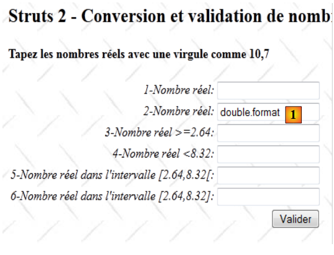

13. Ejemplo 10 – Conversión y validación de números reales
La nueva aplicación presenta la entrada de números reales:
 |
- en [1], el formulario de entrada
- en [2], la respuesta devuelta
El funcionamiento de la aplicación es similar al de la entrada de números enteros, por lo que solo comentaremos los puntos en los que difiere.
13.1. El proyecto de NetBeans
El proyecto de NetBeans es el siguiente:
 |
- en [1], las vistas de la aplicación
- [Accueil.JSP]: la página de inicio
- [FormDouble.JSP]: el formulario de entrada
- [ConfirmationDouble.JSP]: la página de confirmación
- en [2], el archivo de mensajes [messages.properties] y el archivo de configuración principal de Struts
- en [3]:
- [FormDouble.java]: la acción que muestra y procesa el formulario
- [FormDouble-validation.xml]: las reglas de validación de la acción [FormDouble]. Este archivo delega estas validaciones al modelo según el método que acabamos de ver.
- [FormDoubleModel]: el modelo de la acción [FormDouble]
- [FormDoubleModel-validation.xml]: las reglas de validación del modelo
- [FormDoubleModel.properties]: el archivo de mensajes del modelo
- [example.xml]: archivo de configuración secundario de Struts
13.2. La configuración del proyecto
El proyecto se configura principalmente mediante el siguiente archivo [example.xml]:
<?xml version="1.0" encoding="UTF-8" ?>
<!DOCTYPE struts PUBLIC
"-//Apache Software Foundation//DTD Struts Configuration 2.0//EN"
"http://struts.apache.org/dtds/struts-2.0.dtd">
<struts>
<package name="example" namespace="/example" extends="struts-default">
<action name="Accueil">
<result name="success">/example/Accueil.JSP</result>
</action>
<action name="FormDouble" class="example.FormDouble">
<result name="input">/example/FormDouble.JSP</result>
<result name="cancel" type="redirect">/example/Accueil.JSP</result>
<result name="success">/example/ConfirmationFormDouble.JSP</result>
</action>
</package>
</struts>
Es similar al que se analizó para la entrada de números enteros.
13.3. Los archivos de mensajes
El archivo [messages.properties] es el siguiente:
Accueil.titre=Accueil
Accueil.message=Struts 2 - Conversions et validations
Accueil.FormDouble=Saisie de nombres r\u00e9els
Form.titre=Conversions et validations
FormDouble.message=Struts 2 - Conversion et validation de nombres r\u00e9els
FormDouble.conseil=Tapez les nombres r\u00e9els avec une virgule comme 10,7
Form.submitText=Valider
Form.cancelText=Annuler
Form.clearModel=Raz mod\u00e8le
Confirmation.titre=Confirmation
Confirmation.message=Confirmation des valeurs saisies
Confirmation.champ=champ
Confirmation.valeur=valeur
Confirmation.lien=Formulaire de test
xwork.default.invalid.fieldvalue=Valeur invalide pour le champ "{0}".
El archivo [FormDoubleModel.properties] es el siguiente:
double.format={0,number}
double1.prompt=1-Nombre r\u00E9el
double1.error=Tapez un nombre r\u00E9el
double2.prompt=2-Nombre r\u00E9el
double2.error=Tapez un nombre r\u00E9el
double3.prompt=3-Nombre r\u00E9el >=2.64
double3.error=Tapez un nombre r\u00E9el >=2.64
double4.prompt=4-Nombre r\u00E9el <8.32
double4.error=Tapez un nombre r\u00E9el <8.32
double5.prompt=5-Nombre r\u00E9el dans l''intervalle [2.64,8.32[
double5.error=Tapez un nombre r\u00E9el dans l''intervalle [2.64,8.32[
double6.prompt=6-Nombre r\u00E9el dans l''intervalle [2.64,8.32]
double6.error=Tapez un nombre r\u00E9el dans l''intervalle [2.64,8.32]
La línea 1 juega un papel importante. Volveremos a ello más adelante.
13.4. El formulario de entrada
La vista [FormDouble.JSP] es la siguiente:
<%@ page contentType="text/html; charset=UTF-8" pageEncoding="UTF-8"%>
<%@ taglib prefix="s" uri="/struts-tags" %>
<html>
<head>
<title><s:text name="Form.titre"/></title>
<s:head/>
</head>
<body background="<s:url value="/ressources/standard.jpg"/>">
<h2><s:text name="FormDouble.message"/></h2>
<h4><s:text name="FormDouble.conseil"/></h4>
<s:form name="formulaire" action="FormDouble">
<s:textfield name="double1" key="double1.prompt"/>
<s:textfield name="double2" key="double2.prompt" value="%{#parameters['double2']!=null ? #parameters['double2'] : double2==null ? '' :getText('double.format',{double2})}"/>
<s:textfield name="double3" key="double3.prompt" value="%{#parameters['double3']!=null ? #parameters['double3'] : double3==null ? '' :getText('double.format',{double3})}"/>
<s:textfield name="double4" key="double4.prompt" value="%{#parameters['double4']!=null ? #parameters['double4'] : double4==null ? '' :getText('double.format',{double4})}"/>
<s:textfield name="double5" key="double5.prompt" value="%{#parameters['double5']!=null ? #parameters['double5'] : double5==null ? '' :getText('double.format',{double5})}"/>
<s:textfield name="double6" key="double6.prompt"/>
<s:submit key="Form.submitText" method="execute"/>
</s:form>
<br/>
<s:url id="URL" action="FormDouble" method="cancel"/>
<s:a href="%{URL}"><s:text name="Form.cancelText"/></s:a>
<br/>
<s:url id="URL" action="FormDouble" method="clearModel"/>
<s:a href="%{URL}"><s:text name="Form.clearModel"/></s:a>
</body>
</html>
Las líneas 13 a 18 son los seis campos de entrada de números reales. Los campos double2 a double5 tienen un atributo complejo value. Normalmente, los seis campos de entrada deberían ser los siguientes:
<s:textfield name="double1" key="double1.prompt"/>
<s:textfield name="double2" key="double2.prompt"/>
<s:textfield name="double3" key="double3.prompt"/>
<s:textfield name="double4" key="double4.prompt"/>
<s:textfield name="double5" key="double5.prompt"/>
<s:textfield name="double6" key="double6.prompt"/>
Para resolver ciertos problemas que surgieron durante las pruebas, fue necesario complicar un poco las cosas. Por ahora, el lector puede ignorar esta complejidad. Lo explicaremos más adelante.
13.5. La vista de confirmación
La vista de confirmación [ConfirmationFormDouble.JSP] es la siguiente:
 |
Su código es el siguiente:
<%@ page contentType="text/html; charset=UTF-8" pageEncoding="UTF-8"%>
<%@ taglib prefix="s" uri="/struts-tags" %>
<html>
<head>
<title><s:text name="Confirmation.titre"/></title>
<s:head/>
</head>
<body background="<s:url value="/ressources/standard.jpg"/>">
<h2><s:text name="Confirmation.message"/></h2>
<table border="1">
<tr>
<th><s:text name="Confirmation.champ"/></th>
<th><s:text name="Confirmation.valeur"/></th>
</tr>
<tr>
<td><s:text name="double1.prompt"/></td>
<td><s:text name="double1"/></td>
</tr>
<tr>
<td><s:text name="double2.prompt"/></td>
<td>
<s:text name="double.format">
<s:param value="double2"/>
</s:text>
</td>
</tr>
<tr>
<td><s:text name="double3.prompt"/></td>
<td>
<s:text name="double.format">
<s:param value="double3"/>
</s:text>
</td>
</tr>
<tr>
<td><s:text name="double4.prompt"/></td>
<td>
<s:text name="double.format">
<s:param value="double4"/>
</s:text>
</td>
</tr>
<tr>
<td><s:text name="double5.prompt"/></td>
<td>
<s:text name="double.format">
<s:param value="double5"/>
</s:text>
</td>
</tr>
<tr>
<td><s:text name="double6.prompt"/></td>
<td><s:text name="double6"/></td>
</tr>
</table>
<br/>
<s:url id="URL" action="FormDouble!input"/>
<s:a href="%{URL}"><s:text name="Confirmation.lien"/></s:a>
</body>
</html>
La vista [ConfirmationFormDouble.JSP] simplemente muestra la plantilla [FormDoubleModel]. Las líneas 47 a 49 muestran la visualización de un número real. Queremos que esta visualización tenga en cuenta la plantilla localisation de la aplicación. Según esta, un número real no se mostrará de la misma manera en Francia (10,7) que en Gran Bretaña (10.7). Para ello, se utiliza la etiqueta <s:text> que se había utilizado hasta ahora para la internacionalización de la aplicación. Por lo tanto, esta etiqueta también sirve para la localización.
En este caso, la clave de mensaje utilizada es double.format. Esta clave se encuentra en el archivo [FormDoubleModel.properties]:
double.format={0,number}
El valor asociado a la clave no es aquí un mensaje, sino un formato de visualización:
- 0 es un parámetro que representa el valor que se debe mostrar. En este caso, será el campo double5 de la plantilla.
- number representa el formato numérico. Se adaptará a cada país. Sin este formato, el número 10.7 siempre se mostrará como 10.7, independientemente del país.
La etiqueta
<s:text name="double.format">
<s:param value="double5"/>
</s:text>
hace que se muestre el mensaje {0, number}, donde el parámetro double5 (línea 2) reemplazará al parámetro 0 del formato. De esta manera, la plantilla double5 se mostrará en el formato numérico localizado.
13.6. La plantilla [FormDoubleModel]
Los campos double1 a double6 del formulario [FormDouble.JSP] se insertan en la siguiente plantilla [FormDoubleModel]:
package example;
public class FormDoubleModel {
// constructor sin parámetros
public FormDoubleModel() {
}
// campos
private String double1;
private Double double2;
private Double double3;
private Double double4;
private Double double5;
private String double6;
// modelo de relleno
public void clearModel() {
double1 = null;
double2 = null;
double3 = null;
double4 = null;
double5 = null;
double6 = null;
}
// getters y setters
...
}
- los campos double1 y double6 son de tipo String
- los demás campos son de tipo Double
13.7. La validación del modelo
La validación del modelo se controla mediante dos archivos: [FormDouble-validation.xml] y [FormDoubleModel-validation.xml].
El archivo [FormDouble-validation.xml] delega las validaciones a [FormDoubleModel-validation.xml]:
<!--
<!DOCTYPE validators PUBLIC "-//OpenSymphony Group//XWork Validator 1.0.2//
EN" "http://www.opensymphony.com/xwork/xwork-validator-1.0.2.dtd">
-->
<!DOCTYPE validators PUBLIC "-//OpenSymphony Group//XWork Validator 1.0.2//
EN" "http://localhost:8084/ejemplo-10/ejemplo/xwork-validator-1.0.2.dtd">
<validators>
<field name="model" >
<field-validator type="visitor">
<param name="appendPrefix">false</param>
<message/>
</field-validator>
</field>
</validators>
Ya nos hemos encontrado con este archivo.
El archivo [FormDoubleModel-validation.xml] contiene las siguientes reglas de validación:
<!--
<!DOCTYPE validators PUBLIC "-//OpenSymphony Group//XWork Validator 1.0.2//
EN" "http://www.opensymphony.com/xwork/xwork-validator-1.0.2.dtd">
-->
<!DOCTYPE validators PUBLIC "-//OpenSymphony Group//XWork Validator 1.0.2//
EN" "http://localhost:8084/ejemplo-10/ejemplo/xwork-validator-1.0.2.dtd">
<validators>
<field name="double1" >
<field-validator type="requiredstring" short-circuit="true">
<message key="double1.error"/>
</field-validator>
<field-validator type="regex" short-circuit="true">
<param name="expression">^[+|-]*\s*\d+(,\d+)*$</param>
<param name="trim">true</param>
<message key="double1.error"/>
</field-validator>
</field>
<field name="double2" >
<field-validator type="required" short-circuit="true">
<message key="double2.error"/>
</field-validator>
<field-validator type="conversion" short-circuit="true">
<message key="double2.error"/>
</field-validator>
</field>
<field name="double3" >
<field-validator type="required" short-circuit="true">
<message key="double3.error"/>
</field-validator>
<field-validator type="conversion" short-circuit="true">
<message key="double3.error"/>
</field-validator>
<field-validator type="double" short-circuit="true">
<param name="minInclusive">2.64</param>
<message key="double3.error"/>
</field-validator>
</field>
<field name="double4" >
<field-validator type="required" short-circuit="true">
<message key="double4.error"/>
</field-validator>
<field-validator type="conversion" short-circuit="true">
<message key="double4.error"/>
</field-validator>
<field-validator type="double" short-circuit="true">
<param name="maxExclusive">8.32</param>
<message key="double4.error"/>
</field-validator>
</field>
<field name="double5" >
<field-validator type="required" short-circuit="true">
<message key="double5.error"/>
</field-validator>
<field-validator type="conversion" short-circuit="true">
<message key="double5.error"/>
</field-validator>
<field-validator type="double" short-circuit="true">
<param name="minInclusive">2.64</param>
<param name="maxExclusive">8.32</param>
<message key="double5.error"/>
</field-validator>
</field>
<field name="double6" >
<field-validator type="requiredstring" short-circuit="true">
<message key="double6.error"/>
</field-validator>
<field-validator type="regex" short-circuit="true">
<param name="expression">^[+|-]*\s*\d+(,\d+)*$</param>
<param name="trim">true</param>
<message key="double6.error"/>
</field-validator>
</field>
</validators>
- La regla de las líneas 12 a 21 verifica que el campo de entrada double1 siga el patrón de una expresión regular que represente un número real.
- La regla de las líneas 23 a 30 verifica que el campo de entrada double2 se pueda convertir en un número real de doble precisión.
- La regla de las líneas 32-43 verifica que el campo de entrada double3 se pueda convertir en un número real de doble precisión >=2.64. Cabe señalar que se debe utilizar la notación anglosajona para los números reales.
- La regla de las líneas 45 a 56 verifica que el campo de entrada double4 se pueda convertir en un número real de tipo «double» <8,32.
- La regla de las líneas 58-70 verifica que el campo de entrada double5 se pueda convertir en un número real de tipo doble en el intervalo [2,64; 8,32[.
- La regla de las líneas 72 a 80 verifica que el campo double6 siga el patrón de una expresión regular que represente un número real.
Una vez que el interceptor de validación procesa el archivo [FormDoubleModel-validation.xml], este ejecuta el método validate de la acción [FormDouble], si existe. Lo presentaremos junto con el resto de la acción.
13.8. La acción [FormDouble]
La acción [FormDouble] es la siguiente:
package example;
import com.opensymphony.xwork2.ActionSupport;
import com.opensymphony.xwork2.ModelDriven;
import java.util.Map;
import org.apache.struts2.interceptor.SessionAware;
import org.apache.struts2.interceptor.validation.SkipValidation;
public class FormDouble extends ActionSupport implements ModelDriven, SessionAware {
// constructor sin parámetros
public FormDouble() {
}
// modelo de la acción
public Object getModel() {
if (session.get("model") == null) {
session.put("model", new FormDoubleModel());
}
return session.get("model");
}
@SkipValidation
public String clearModel() {
// valor predeterminado del modelo
((FormDoubleModel) getModel()).clearModel();
// resultado
return INPUT;
}
public String cancel() {
// se limpia el modelo
((FormDoubleModel) getModel()).clearModel();
// resultado
return "cancel";
}
// SessionAware
Map<String, Object> session;
public void setSession(Map<String, Object> session) {
this.session = session;
}
// validación
@Override
public void validate() {
// ¿Es válida la entrada doble6?
if (getFieldErrors().get("double6") == null) {
// se reemplaza la coma por el punto en la cadena «double6»
String strDouble6 = (((FormDoubleModel) getModel()).getDouble6()).replace(',', '.');
// Cadena --> doble
double double6 = Double.parseDouble(strDouble6);
// verificación
if (double6 < 2.64 || double6 > 8.32) {
addFieldError("double6", getText("double6.error"));
}
}
}
}
La acción [FormDouble] sigue el mismo modelo que la acción [FormInt]. Solo comentaremos el método validate. Recordamos que el método validate se ejecuta después de procesar el archivo de validación [FormDoubleModel-validation.xml] y antes de ejecutar el método execute.
- línea 48: si ya hay errores en el campo double6, no se realiza ninguna acción adicional.
- línea 50: se obtuvo una cadena con el formato 45,67. Se almacenó en el campo double6 del modelo. Se reemplaza la coma por el punto para obtener 45.67.
- línea 52: la cadena 45.67 se transforma en un número real de doble precisión. Esto debe funcionar, ya que la cadena double6 respeta el formato de un número real.
- línea 54: se verifica que el número real de doble precisión obtenido se encuentre dentro del intervalo [2.64, 8.32].
- línea 55: si no es así, el mensaje de error con clave double6.error se adjunta al campo double6. Este mensaje se encontrará en el archivo [FormDoubleModel.properties]. Se mostrará cuando se vuelva a mostrar el formulario con errores.
13.9. Últimos detalles
Ahora, volvamos a la complejidad de los campos de entrada del formulario [FormDouble.JSP]. Analizaremos el campo double2. Este análisis se extiende a los campos double3 a double5, que tienen un modelo del tipo Double. Para los campos double1 y double6, que tienen un modelo del tipo String, no hay ningún problema.
El campo de entrada double2 es el siguiente:
<s:textfield name="double2" key="double2.prompt" value="%{#parameters['double2']!=null ? #parameters['double2'] : double2==null ? '' :getText('double.format',{double2})}"/>
Comencemos con la etiqueta más sencilla:
y veamos qué sucede:
 |
- en [1], se valida el número correcto double2. En la captura de pantalla no se ve muy bien, pero escribimos el número con una coma.
- En [2], la pantalla de confirmación. La entrada double2 pasó las pruebas de validación. El número se muestra con una coma.
 |
- En [3], volvemos al formulario
- en [4], el formulario. Lo que la captura de pantalla no muestra bien es que el número double2, que inicialmente era 4,32, ahora es 4.32 con un punto decimal.
 |
- en [5], volvemos a validar el formulario sin cambiar nada
- en [6], se reporta un error en el campo double2.
El problema es el siguiente:
- inicialmente, en [1], la cadena de entrada «4,32» se transformó correctamente en el número real 4.32. Esto significa que la operación de cadena a doble tuvo éxito y que, por lo tanto, en este sentido Struts toma en cuenta la configuración regional, en este caso Francia.
- El nuevo formulario [4] muestra en el campo double2 el valor del número real 4.32. Como no se ha localizado la visualización, la muestra por defecto al estilo anglosajón, c.a.d, con un punto decimal. Por lo tanto, en la conversión de Double a String, Struts ya no toma en cuenta la configuración regional; de lo contrario, habría mostrado 4,32 con una coma.
Esto es, por decir lo menos, incoherente. Pero no importa, vamos a localizar la visualización del número 4.32. La etiqueta de entrada queda así:
<s:textfield name="double2" key="double2.prompt" value="%{getText('double.format',{double2})}"/>
El atributo value especifica el valor que se debe mostrar en el campo double2. Este es el resultado de una expresión OGNL. Recordemos la definición de la clave double.format en el archivo [FormDoubleModel.properties]:
double.format={0,number}
El método getText('clave') permite obtener el mensaje asociado a una clave. Este se busca en el archivo correspondiente a la configuración regional actual. Así, si la configuración regional fuera «es» (España), la clave double.format se habría buscado en el archivo [FormDoubleModel_es.properties].
El método getText('clave', {param0, param1, ...}) permite recuperar un mensaje con parámetros. El mensaje
es un mensaje parametrizado por el parámetro 0. Este es un parámetro posicional. El método getText('double.format', {double2}) asignará el número double2 al parámetro 0. Finalmente, se solicita el valor de double2 en el formato numérico localizado. En Francia, el número 4.56 se localizará como la cadena «4,56».
Tras esta transformación, se vuelven a realizar las pruebas.
 |
Desde la visualización inicial del formulario, se presenta una anomalía en [1]. Volvamos a la etiqueta:
<s:textfield name="double2" key="double2.prompt" value="%{getText('double.format',{double2})}"/>
En la visualización inicial, el valor del modelo double2 es null, un valor no numérico. Modificamos la etiqueta de la siguiente manera:
<s:textfield name="double2" key="double2.prompt" value="%{double2==null ? '' : getText('double.format',{double2})}"/>
Esta vez, se comprueba si es double2==null. Si es así, se muestra una cadena vacía.
Una vez realizado este cambio, retomamos las pruebas:
 |
 |
Las pantallas [1] a [4] muestran que el problema que buscábamos resolver ya está resuelto:
- en [1], se ingresa 4,67
- en [2], este número fue aceptado
- en [3], se vuelve a mostrar como 4,67 con la coma, lo cual se confirma en [4].
Desafortunadamente, los problemas no terminan ahí. Veamos la siguiente secuencia:
 |
- En [5], se agrega un carácter para invalidar double2
- en [6], las pruebas de validación han funcionado y se reporta el error. Sin embargo, la cadena que se muestra en [6] no es la cadena errónea, sino el valor actual del modelo double2. Se ha perdido el valor ingresado.
Al pasar de [5] a [6], la consulta no se completa. Es detenida por el interceptor de validación. En [6] se ha mostrado el valor del modelo double2, el cual no recibió un nuevo valor debido a esta interrupción. Por lo tanto, se muestra su valor anterior, cuando se debería haber mostrado la cadena ingresada. Los parámetros de una consulta se pueden ver mediante la notación #parameters['param']. Modificamos el campo de entrada double2 de la siguiente manera:
<s:textfield name="double2" key="double2.prompt" value="%{#parameters['double2']!=null ? #parameters['double2'] : double2==null ? '' : getText('double.format',{double2})}"/>
El valor que se muestra en el campo double2 se calcula de la siguiente manera: si existe el parámetro «double2», se muestra; de lo contrario, se muestra la plantilla double2. Se invita al lector a comprobar que esta nueva versión de la etiqueta resuelve los problemas encontrados.
13.10. Conclusion
Es sorprendente que ingresar números reales con control de validez sea tan complicado... ¿Quizás se me haya pasado algo por alto en la documentación?